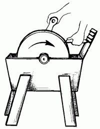

О заточке инструментов.


Чтобы получить инструмент с оптимальной режущей частью, следует произвести его правильную заточку.
Для ручной заточки инструментов применяют точило, оселок, брусок и напильник.
При использовании бруска лезвие инструмента необходимо удерживать двумя руками и водить по поверхности бруска взад и вперед. Нажим на инструмент производится при движении вперед, при движении назад нажима можно не делать. Режущая поверхность располагается под наклоном, чтобы фаска касалась бруска всей плоскостью.
Нажим на лезвие не должен быть слишком сильным. Брусок время от времени нужно смачивать водой. Заточку выполняют до тех пор, пока на противоположной от стачиваемой фаски стороне не появятся заусенцы.
При использовании точила со шлифовальным кругом следует соблюдать особую осторожность, не допуская чрезмерного нагрева металла. Рабочий конец нужно чаще опускать в воду. В процессе заточки лезвие равномерно и ровно прижимают к кругу, следя за сохранением угла заострения лезвия и прямолинейностью его режущих кромок.

Рис. 101. Точило.
После заточки кромки лезвия дорабатывают оселком, удаляя зазубрины, заусенцы и другие дефекты. Инструмент берут обеими руками и плавно двигают им по поверхности оселка, сохраняя правильный угол наклона. Поверхность оселка периодически следует смачивать водой или маслом.
После проведения серии движений лезвие следует повернуть противоположной стороной, затем положить плашмя на оселок и протянуть назад, чтобы удалить заусенцы.
Заточка позволяет проверять и качество самого инструмента. При заточке качественного инструмента образующиеся заусенцы хорошо удаляются при правке на оселке. Если заусенцев нет совсем или они быстро опадают, то инструмент слишком закален и будет быстро изнашиваться. Образование длинных заусенцев говорит о том, что инструмент изготовлен из слишком мягкого материала.
Стамески и рубанки точат на шлифовальном круге, поверхность которого должна быть смочена.
Почти все виды сверл можно точить на бруске или оселке. Можно пользоваться для этих целей и напильником с мелкой насечкой, а для удаления заусенцев использовать оселок.
У сверл желательно затачивать резец и дорожники. Внешнюю сторону дорожников лучше не трогать, чтобы не уменьшить диаметр сверла.
Лучше затачивать внутреннюю сторону. Следует по возможности сохранять прежнюю форму рабочих частей, так как излишняя опиловка ведет к быстрому выходу сверла из строя. Сверху затачивается горизонтальный резец, а появившиеся заусенцы нужно снять оселком. Заточка горизонтального резца снизу не рекомендуется, так как это будет уводить режущую кромку.
Сверло горизонтального резца при заточке необходимо упирать жалом в кусок дерева, помогая себе левой рукой; часть, прилегающая к центру выше винтового жала, должна быть закруглена. Сверло по дереву также должно иметь острую резьбу центрирующего жала. Жало затачивают треугольным напильником с мелкой насечкой или надфилем.
Можно затачивать режущий инструмент с помощью универсальных и специальных заточных станков. Заточный станок применяется для заточки ножей рубанков, дисковых пил, долбежных и пильных цепей. Он имеет электропривод и комплект съемных механизмов, предназначенных для различных заточных работ.